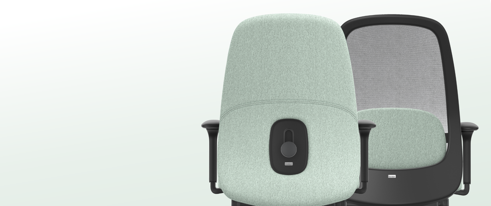
Interstuhl België
Ergonomische
Bureaustoelen
Comfort en design, zorgvuldig geselecteerd.
Onze categorieën
Kies uw categorie
Ontdek onze zorgvuldig geselecteerde categorieën van ergonomische bureaustoelen, ontworpen voor comfort en stijl.
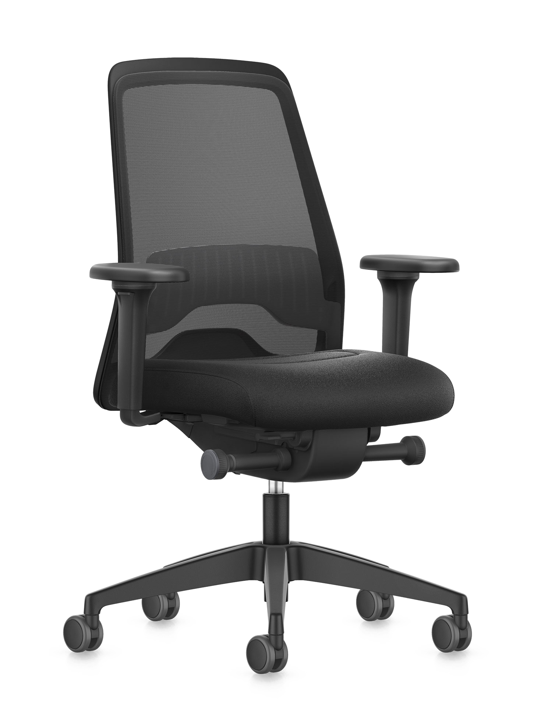
Ergonomische bureaustoelen
Ontworpen voor maximale comfort en ergonomie.
Een ergonomische bureaustoel ondersteunt een comfortabele zithouding tijdens het werken. Kies uit verschillende modellen met verstelbare functies voor jouw lichaam en werkbehoeften, ideaal voor een ergonomische werkplek op kantoor of thuis.
Ontdek deze categorie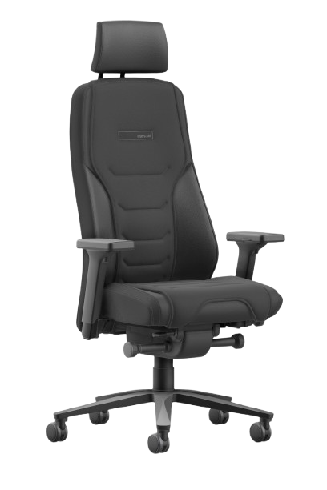
24-uurs bureaustoelen
Ontworpen voor continu gebruik en maximale comfort.
Voor werkplekken met intensief en langdurig gebruik zijn 24-uurs bureaustoelen een geschikte keuze. Ze combineren een robuuste constructie met ondersteuning en zitcomfort, en zijn verkrijgbaar in uitvoeringen met een draagvermogen tot 150 kg.
Ontdek deze categorie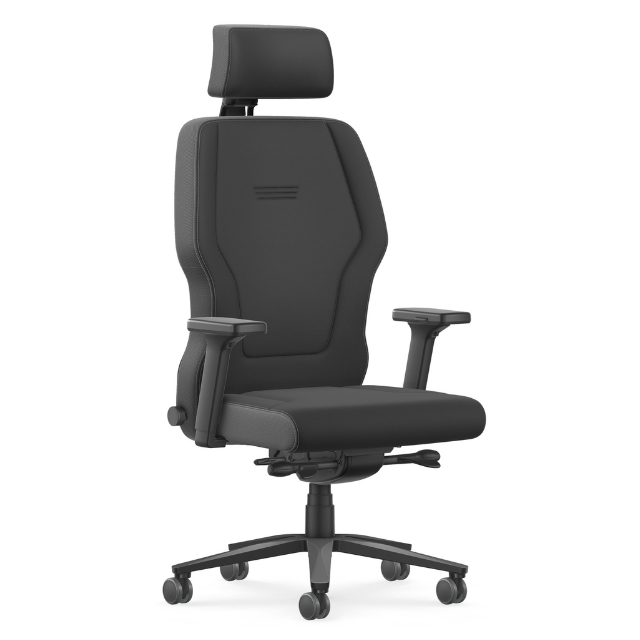
XL-bureaustoelen
Speciaal ontworpen voor extra ruimte en comfort.
XL-bureaustoelen bieden extra ruimte, stabiliteit en ondersteuning voor grotere gebruikers. Dankzij hun stevige constructie en ruime zitting zijn deze ergonomische bureaustoelen geschikt voor kantoor en thuiswerk, met modellen die tot 200 kg kunnen dragen.
Ontdek deze categorie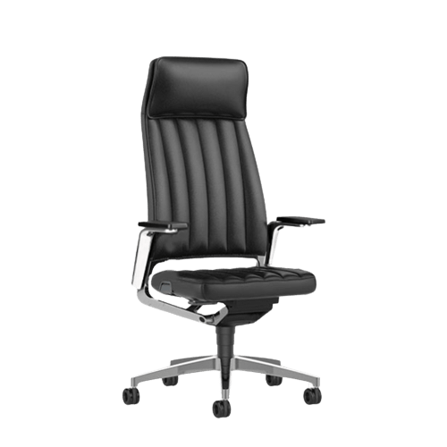
Directiebureaustoelen
Professionele uitstraling gecombineerd met comfort.
Een directiebureaustoel combineert een luxueuze uitstraling met hoogwaardig materiaalgebruik en zitcomfort. Kies een stijlvol design dat past bij je directiekantoor of vergaderruimte en bijdraagt aan een professionele uitstraling van je werkplek.
Ontdek deze categorie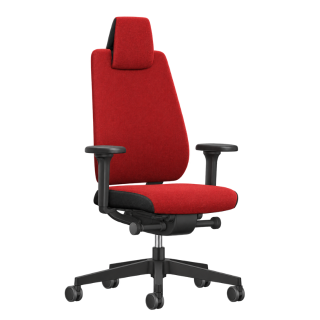
Ergonomische gamestoelen
Maximale comfort tijdens langdurig gebruik.
Comfortabel gamen begint bij een goede stoel. Ergonomische gamestoelen combineren een ondersteunende rugleuning met verstelbare functies en een comfortabele zitting. Ideaal voor gamers die tijdens lange gamesessies aandacht willen besteden aan hun zithouding.
Ontdek deze categorie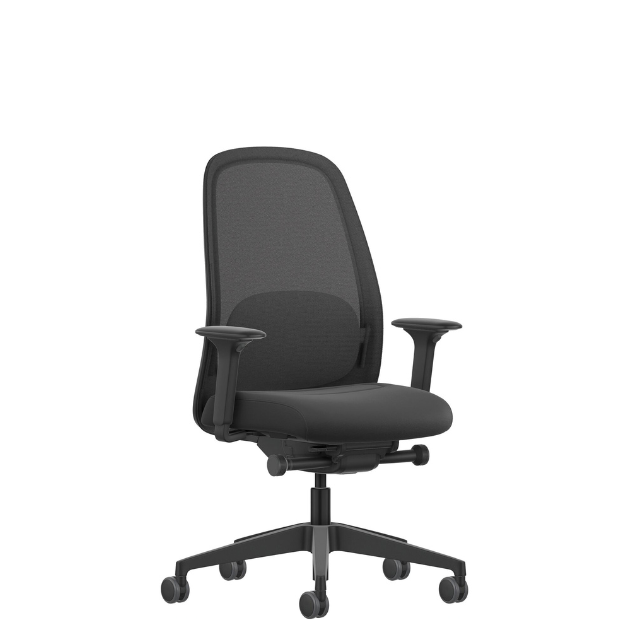
Outlet
Topkwaliteit aan sterk gereduceerde prijzen.
Ontdek onze outlet met bureaustoelen en kantoormeubilair aan aantrekkelijke prijzen. Profiteer van stockopruimingen en toonzaalmodellen met interessante kortingen. Ideaal om kwaliteitsvol kantoormeubilair voordelig aan te kopen zolang de voorraad strekt.
Ontdek deze categorieSioens Selectie
Voor elk wat wils
Ontdek onze bestsellers en topkeuzes: van populaire favorieten tot premiumproducten die uitblinken in kwaliteit, comfort en design. Laat je inspireren door onze meest gekozen producten en vind de oplossing die perfect bij jouw wensen past.
Ergonomische bureaustoel
Bekijk product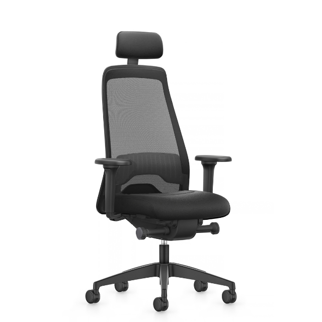
Ergoplus
Bekijk product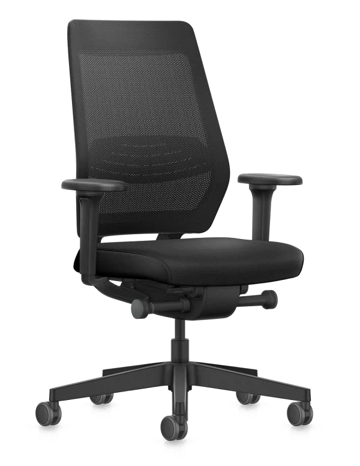
NPR
Bekijk product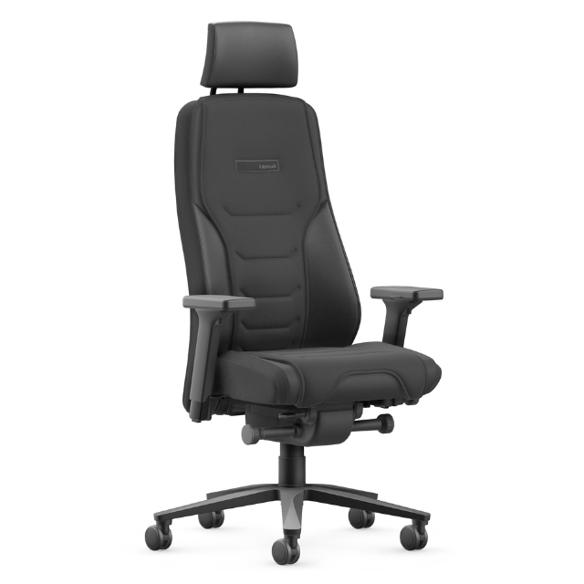
24-uurs bureaustoel
Bekijk productMade in Germany
Geproduceerd in Duitsland, waar vakmanschap en kwaliteit centraal staan.
10 jaar garantie
Profiteer van 10 jaar garantie op gasveer en mechaniek. Meer info
Gratis Levering en Montage
Geniet van gratis levering en montage van uw nieuwe bureaustoel. Ook aan bedrijven én particulieren
Bestsellers
Onze populaire modellen
Ergonomische bureaustoelen aan een zeer scherpe prijs
Geniet van langdurig zitcomfort dankzij de dikkere, zachte comfortzitting van deze ergonomische bureaustoel. De NPR-armleggers zijn optimaal verstelbaar en passen zich aan verschillende lichaamsbouwen aan, ook aan een slank postuur. Zo zit je comfortabel én dichter bij je bureau, met een ergonomische werkhouding als resultaat. Deze verstelbare bureaustoel is bovendien een ideale meegroeistoelen, geschikt voor volwassenen en kinderen vanaf 45 kg. Perfect voor thuis, op kantoor of aan de studeerplek.
Toe aan iets meer of wil je gewoon alles uit de Every halen? Dan raden wij de Every Full Option aan: dezelfde look, maar een nieuw niveau in ergonomische ondersteuning en zitcomfort.
Gerecycleerd materiaal
Elke bureaustoel van Interstuhl is gemaakt van recycleerbaar materiaal. Door een bureaustoel te kopen van Interstuhl draagt u ook uw steentje bij.
Milieuvriendelijke verpakking
Wij zorgen ervoor dat elke bureaustoel in een milieuvriendelijke verpakking bij onze klanten terechtkomt.
Optimaal gebruik van materialen
Het optimaal gebruik van componenten zorgt ervoor dat er minder onnodige materialen geproduceerd worden.
Made in Germany
Elk product dat door Interstuhl gemaakt wordt, is geproduceerd in Duitsland.
Haal nog meer uit je werkplek
Voor de volledig ergonomische ervaring ga je voor een zit-sta bureau. Flexwerken wordt de nieuwe normaal en vervangt het klassieke zittend kantoorwerk.
Om het gebrek aan beweging te compenseren en het verminderen van verzuimdagen, raden bedrijfsartsen de zogenaamde "ergonomie-formule" aan: 50% van de werkuren op kantoor zouden zittend, 25% staand en de rest van de tijd in beweging doorgebracht moeten worden.
Een grote collectie van onze zit-sta-bureaus beschikt over een elektrische motor die met een handig bedieningspaneel de tafelblad op de juiste hoogte brengt. Bovendien zijn deze zeer goed programmeerbaar en kun je zonder hindernis snel en gemakkelijk schakelen tussen zittend en staand werken.
Zitsta bureaus en ergonomische bureaustoelen zijn perfect complementair. Een zit-sta bureau leent zich uitermate goed bij de ideale ergonomische zithouding. Om ook de tijd die je staat wat te doorbreken kan je gebruik maken van een zit-sta hulp of kruk. Deze zijn verkrijgbaar in drie verschillende formaten. Zo heb je de nodige beweging én comfort en kun je gemakkelijk afwisselen.
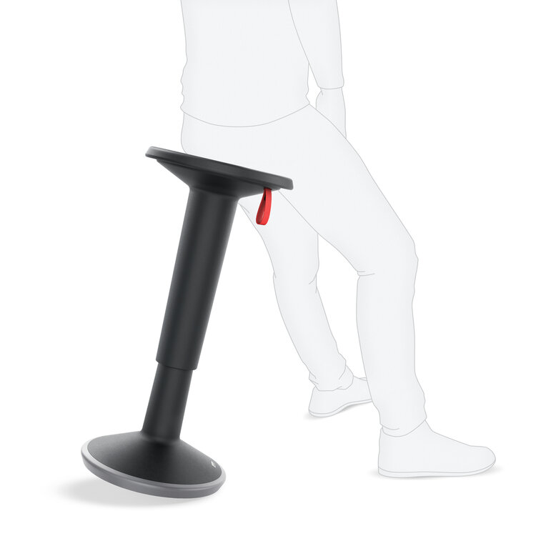
Gratis levering
Wij leveren ook aan huis. Onze levering is volledig gratis in België en Nederland. Onze bureaustoelen worden zowel geleverd aan particulieren als aan bedrijven.
Gemonteerd geleverd
Ons meubilair wordt volledig gemonteerd geleverd, tenzij anders overeengekomen.
Toonzaal & ophalen
Kom zeker eens een kijkje nemen in onze toonzaal. Hier kunt u onze modellen uitproberen, de verschillende kleuren en materialen bekijken aan de hand van stalen en u laten adviseren door ons team. Stoelen die besteld zijn, kunnen hier ook opgehaald worden.
10 jaar garantie
Alle bureaustoelen van Interstuhl hebben 10 jaar garantie. Interstuhl biedt deze garantie aan omdat ze zelfzekerd zijn van hun kwaliteit.
CertificaatBimos: dé ergonomische labo- & industriestoelen die je zelf kan configureren
Elke werkplek is uniek. Daarom configureert u bij Bimos uw stoel heel eenvoudig zelf: kies bijvoorbeeld ESD-veilige uitvoeringen voor cleanrooms, chemicaliënbestendige bekleding voor laboratoria of robuuste materialen voor de productie. Pas zithoogte, armleggers en rugsteun aan uw behoeften aan - voor gezond zitten, efficiënt werken en een hoge tevredenheid van uw medewerkers.
.png)
Configureer jouw ideale werkstoel op maat van je werkplek, met optimaal zitcomfort, ondersteuning en functionaliteit voor elke werkomgeving.
Configureer jouw werkstoelBeleef de vrijheid en ga actiever zitten
Interstuhl PURE – ergonomisch en dynamisch zitten
Langdurig statisch zitten kan negatieve gevolgen hebben voor je gezondheid. De Interstuhl PURE stimuleert dynamisch zitten en natuurlijke bewegingen dankzij innovatieve ergonomie en de unieke Smart-Spring-technologie.
Drie pijlers voor gezond zitten
- Activering: PURE stimuleert beweging tijdens het zitten. Je spieren blijven actief en je benen, heupen en wervelkolom krijgen meer bewegingsvrijheid.
- Vrijheid: De ergonomische bureaustoel ondersteunt natuurlijke houdingsveranderingen zonder je bewegingen te beperken. Zo wordt actief en dynamisch zitten gestimuleerd.
- Steun: Ondanks de grote bewegingsvrijheid biedt PURE een stabiele ondersteuning. De stoel past zich automatisch aan je lichaam, gewicht en bewegingen aan, zonder dat je voortdurend instellingen hoeft te wijzigen.
PUREis3: maximale bewegingsvrijheid
De Interstuhl PUREis3 combineert innovatieve ergonomie met driedimensionaal zitten. De rugleuning beweegt tot 38°, terwijl de zitting tot 26° zijdelingse bewegingsvrijheid biedt. De Smart Seat volgt ook voorwaartse bewegingen tot 12°. Zo beweeg je natuurlijk mee tijdens het werken.
Innovatieve Smart-Spring-technologie
De Smart Spring vormt het hart van de Interstuhl PURE. Dankzij een speciale polyamide-glasvezelverbinding past de stoel zich dynamisch aan je lichaam en bewegingen aan, in meerdere richtingen. Het resultaat is een ergonomische bureaustoel die maximale bewegingsvrijheid combineert met automatische ondersteuning.
Ontdek de Interstuhl PURE bij Sioen Office & Furniture en ervaar hoe comfortabel en dynamisch zitten je werkplek kan verbeteren.
Bekijk de Pure van Interstuhl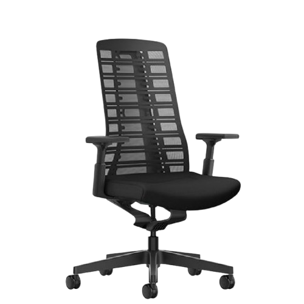
Actieprijzen op
ergonomische stoelen
Al onze ergonomische bureaustoelen in promo zijn uit voorraad leverbaar tegen scherpe prijzen. De meeste modellen zijn full option — geschikt voor groot en klein, zelfinstellend of meegroeimodel. Kom vrijblijvend testen in onze toonzaal met meer dan 30 modellen, waar een ergonomie-expert u persoonlijk adviseert. Bestelt u online? Dan zorgen wij voor gratis montage en levering in heel België en Nederland.
Ergonomie & kwaliteit
Waarom kopen bij Interstuhl?
Tegenwoordig brengen mensen steeds meer tijd al zittend door. Dit vereist een hoge expertise in het ontwerp en de fabricage van bureaustoelen. Interstuhl is een Duits familiebedrijf dat voornamelijk op ergonomische bureaustoelen focust. Ze creëren ergonomische bureaustoelen voor elk gebruik en in elke prijsklasse met een functioneel ontwerp.
Ergonomische stoelen kunnen vrij ingesteld worden zodat deze optimaal aan ieders formaat kan worden afgestemd. Bovendien voorzien ze in de nodige ondersteuning voor een actieve zithouding. De stoelen zijn zo gemaakt dat de gebruiker optimaal zitcomfort ervaart.
Ergonomiegids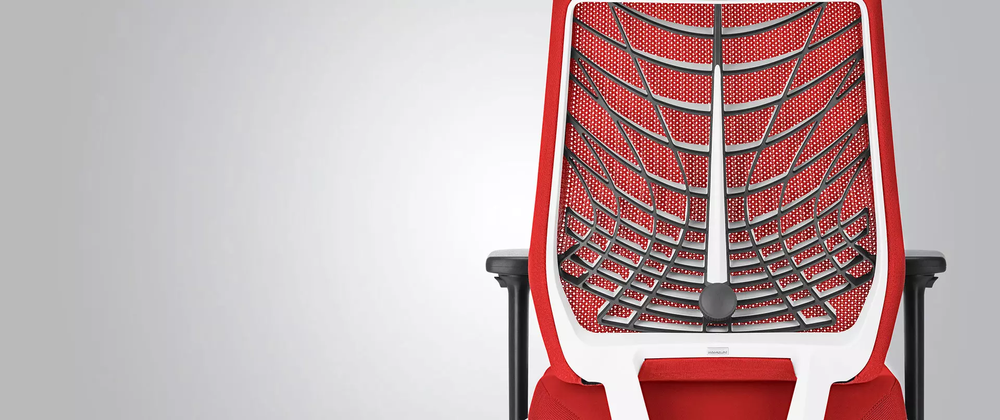
We Care
We-Care
Ons circulaire basisabonnement van 10 jaar voor het gebruik en de zituren.
Re-Use
Next Life stoelen. Eersteklas zitcomfort tegen een aantrekkelijke prijs.
Re-Cycle
Als de stoel echt niet meer bruikbaar is, laten we hem lokaal recyclen.
Re-Design
We revitaliseren onze stoelen via het Re-design programma met partner Weder.
Schoonmaakbeurt
Onze professionele schoonmaakbeurt lost alle soorten vuiligheid op.
Onze sterke punten
Ruime stock
Een uitgebreid assortiment steeds beschikbaar uit voorraad.
Snelle levering
Uw bestelling snel en gratis geleverd in België en Nederland.
Staalkaarten in onze toonzaal
Bekijk en vergelijk alle kleuren en materialen aan de hand van stalen.
Testmodellen in toonzaal
Kom onze modellen zelf uitproberen in onze toonzaal te Bierbeek.
Onze Referenties
"Ik ben zeer tevreden met mijn nieuwe bureaustoel van Interstuhl. Het comfort is geweldig en de kwaliteit is uitstekend."
"Uitstekende service en snelle levering. De stoel staat prachtig in ons kantoor."
"Na jaren rugklachten eindelijk verlost dankzij de ErgoPlus. Aanrader voor iedereen!"
"Professioneel advies en een stoel die perfect past bij mijn werkplek. Top ervaring!"
"We hebben 30 stoelen besteld voor ons kantoor. Perfecte service van A tot Z."
"Heel blij met de gratis montage. Alles werd netjes opgesteld en uitgelegd. Aanrader!"
"De showroom is een bezoekje waard. Je kan alles rustig testen voor je beslist."
"Kwaliteit die je meteen voelt. Mijn rug heeft me nog nooit zo bedankt na een werkdag."
"Wij schakelden over van een ander merk en het verschil is enorm. Veel betere ondersteuning voor de onderrug."
"Heel fijn dat je gewoon kan langskomen in de showroom zonder afspraak. Persoonlijk advies maakt het verschil."
"Al 5 jaar dezelfde stoel en hij zit nog als nieuw. De 10 jaar garantie is volledig terecht."
"Ik ben zeer tevreden met mijn nieuwe bureaustoel van Interstuhl. Het comfort is geweldig en de kwaliteit is uitstekend."
"Uitstekende service en snelle levering. De stoel staat prachtig in ons kantoor."
"Na jaren rugklachten eindelijk verlost dankzij de ErgoPlus. Aanrader voor iedereen!"
"Professioneel advies en een stoel die perfect past bij mijn werkplek. Top ervaring!"
"We hebben 30 stoelen besteld voor ons kantoor. Perfecte service van A tot Z."
"Heel blij met de gratis montage. Alles werd netjes opgesteld en uitgelegd. Aanrader!"
"De showroom is een bezoekje waard. Je kan alles rustig testen voor je beslist."
"Kwaliteit die je meteen voelt. Mijn rug heeft me nog nooit zo bedankt na een werkdag."
"Wij schakelden over van een ander merk en het verschil is enorm. Veel betere ondersteuning voor de onderrug."
"Heel fijn dat je gewoon kan langskomen in de showroom zonder afspraak. Persoonlijk advies maakt het verschil."
"Al 5 jaar dezelfde stoel en hij zit nog als nieuw. De 10 jaar garantie is volledig terecht."
Officiële Verdeler
Wij zijn een officiële distributeur van Interstuhl in België en Nederland. Bestel uw favoriete artikelen via onze webshop met gratis verzending of kom een kijkje nemen in onze toonzaal.
Klantgericht
Elke persoon is uniek, dus is het van belang dat elke ergonomische stoel aangepast wordt aan uw lichaamsbouw en persoonlijke wensen.
Zoektocht
Wij helpen u graag met uw zoektocht naar de perfecte, betaalbare bureaustoel. Stel nu dat u uw bureaustoel al gekozen heeft, contacteer ons vrijblijvend voor een offerte.
Onze showroom
Kom gerust eens langs in onze toonzaal te Bierbeek (regio Leuven), parkeer je auto op onze parking en kijk eens rond in onze ruime toonzaal. Bekijk onze showroom